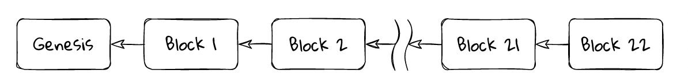
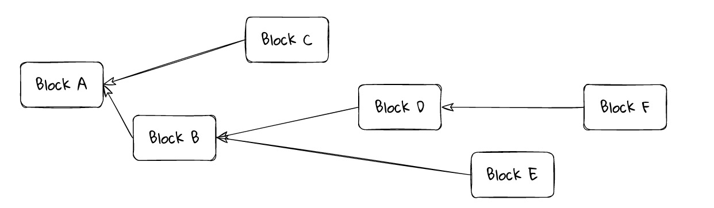
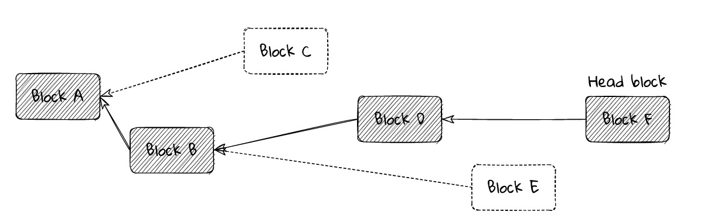
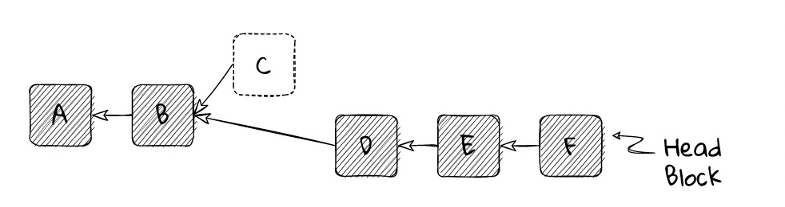
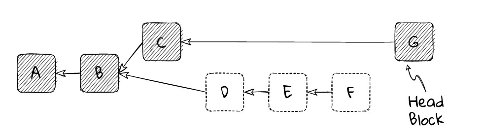

Introduction#
Consensus is a method for building reliable distributed systems using unreliable components.
Blockchain-based distributed systems aim to achieve consensus on a single transaction history.
Proof of work and proof of stake are not consensus protocols but rather support them.
Many blockchain consensus protocols are “forking”.
Forked chains use fork selection rules and sometimes reorganize.
In a “secure” protocol, nothing bad happens.
In a “real-time” protocol, good things always happen.
No practical protocol can be permanently secure and always effective.
What is Consensus?#
When we talk about consensus, we mean reaching a broad agreement. For example, a group of people go to the movies, if they have no objections to the proposal “watch a certain movie,” then consensus can be reached. If there are objections, they must decide which movie to watch through a certain method. In extreme cases, these people will separate.
For the ErbieChain, the process of reaching consensus is standardized, and reaching consensus means that at least 50% of the nodes on the network have reached a consensus on the global state of the network.
What is a Consensus Mechanism?#
A consensus mechanism is a set of protocols, incentives and ideas that enable the nodes of the entire network to reach a consensus on the blockchain state.
ErbieChain adopts a consensus mechanism based on DRE+WPoS+BFT. The security of its encrypted economy comes from a series of reward and confiscation measures implemented on the locked capital of the staker. This incentive system encourages all pledgers to run the validator nodes honestly and punishes those who behave badly, making it extremely costly to attack the network.
There is also a protocol that governs how to select honest validators, allowing them to propose or verify blocks, process transactions, and vote to support the view of their chain head. In rare cases, if multiple blocks exist in the vicinity of the chain head, a fork selection mechanism is used to select blocks to form a chain with the “maximum block difficulty value”.
These parts together form the consensus mechanism.
Types of Consensus Mechanisms#
Proof of Stake (PoS)#
ErbieChain currently uses a consensus protocol based on Weighted Proof of Stake (WPoS) + BFT + DRE.
Block Creation
Validators create blocks. Each block randomly selects a validator as the block proposer. The consensus client of the block proposer packages transactions as “execution loads,” and then they package the “execution load” into consensus data and form a block, which is then sent to other nodes on the ErbieChain network. Such block production receives ERB rewards. In rare cases, there may be multiple possible blocks produced, or nodes may receive blocks at different times. The fork selection algorithm selects the block that gives the formed chain the maximum difficulty value (the normal block difficulty value is 1, and the black hole block difficulty value is 24).
Security
The proof of stake system ensures the security of the encrypted economy because an attacker trying to control the entire chain must destroy a large amount of ERB. The incentive mechanism rewards honest pledgers, while the punishment mechanism prevents pledgers from engaging in malicious behavior.
Overview of Proof of Stake and Proof of Work#
It is worth noting that proof of work and proof of stake are not consensus protocols in and of themselves. They are typically (lazily) referred to as consensus protocols, but each protocol is only a promoter of consensus protocols.
For the main part, proof of work and proof of stake are both anti-Sybil mechanisms that come at a cost to participate in the protocol. This prevents attackers from overwhelming the protocol at low or zero cost.
However, proof of work and proof of stake are typically closely coupled with fork selection rules and the consensus mechanisms they support. They provide a useful way to allocate weight or score to blockchains: total work done in proof of work; value supporting specific chains in proof of stake.
Besides these basic factors, proof of work and proof of stake can both support many different consensus protocols, each with its own dynamics and tradeoffs.
Blockchain#
Of course, the basic primitive of blockchain technology is a block.
A block is a set of transactions assembled by a leader (block proposer). The contents of the block (its payload) may vary by protocol.
Aside from the special genesis block, each block is built upon and points to a parent block. Hence, we eventually choose to call it a blockchain. Regardless of the content of the block, the goal of the protocol is to have all nodes on the network agree on the same history of the blockchain.
As shown in the above figure, time moves from left to right, and each block, except for the genesis block, points to the parent block that it builds upon.
As nodes add their blocks to the top of the chain, the chain grows. This is done by temporarily selecting a “leader,” which is a single node with the authority to extend the chain. In proof of work, the leader is the miner who first solves the proof of work challenge for their block. In ErbieChain’s proof of stake, the leader is pseudo-randomly selected from the active staker pool.
The leader (often referred to as the block proposer) adds a single block to the chain and has complete responsibility for selecting and ordering the contents of that block.
The use of blocks is an optimization. In principle, every addition to the chain could be a single transaction, but this would incur huge consensus overhead. So blocks are batches of transactions, and sometimes there is debate about how big these blocks should be. In Bitcoin, block size is limited by the number of data bytes in the block. In ErbieChain’s proof of work chain, block size is limited by the gas limit (i.e. the amount of work required to run transactions in the block) in the block. Block size is limited by hard-coded constants.
Block Tree#
Our neat linear chain picture will largely reflect what we see in practice, but not always. Sometimes, due to network latency, dishonest block proposers, or client errors, any given node might see something like the following.
In general, we may end up with a block tree instead of a blockchain. Similarly, time moves from left to right, and each block points to its built parent block.
In a real network, we may end up with something more like a block tree than a blockchain. In this example, few blocks are built on their “obvious” parent.
Why does the proposer of block C link to A instead of B?
The proposer of block C may not have received block B when preparing to propose.
The proposer of block C may intentionally exclude block B from its chain, such as stealing its transactions or censoring certain transactions in B.
The proposer of block C may consider block B to be invalid for some reason.
The first two reasons cannot be distinguished in a wider network. We only know that C is built on A, but we never know why.
Similarly, why does the proposer of block D build on B rather than C? Any of the above reasons apply, and we can add another reason:
The proposer of block D may have decided on some basis that the wider network is more likely to include B, so building on B for D is more likely to become the final blockchain than building on C.
Each branch in the block tree is called a “fork”. Forks naturally occur as a result of network and processing delays. However, they may also occur as a result of client errors, malicious client behavior, or protocol upgrades that make old blocks invalid relative to new rules. The last type is usually called a “hard fork”.
The existence of forks in consensus protocols is a result of prioritizing liveness over safety, in the terminology discussed below: If you follow nodes on different forks, they will give you different answers about the state of the system. There are non-forking consensus protocols, such as PBFT in the classical consensus world and Tendermint in the blockchain world. These protocols always produce a single linear chain, so they are “secure” in form. However, they sacrifice liveness on asynchronous networks like the Internet: they do not fork but instead come to a complete stop.
Fork Selection Rules#
As we have seen, for various reasons - network delays, network interruptions, unordered message reception, malicious behavior by peers - nodes in the network ultimately obtain different views of the network state. Ultimately, we want each correct node on the network to agree on the same linear history view, thus having a common view of the system state. The fork selection rules of the protocol bring about this agreement.
Given a block tree and some decision criteria based on a node’s local network view, the fork selection rule aims to choose the branch that is most likely to eventually enter the final linear canonical chain from all available branches. That is, when a node attempts to converge on a canonical view, it chooses the branch that is least likely to be pruned from the block tree.
The fork selection rule implicitly selects the branch by choosing the top block (called the head block) of a branch.
For any correct node, the first criterion of any fork selection rule is that the block it selects must be valid according to the protocol’s rules, and all of its ancestors must be valid. Any invalid blocks are ignored, and any blocks built on top of invalid blocks are themselves invalid.
In light of this, there are many examples of different fork selection rules.
The proof-of-work protocols in Ethereum and Bitcoin use the “heaviest chain rule”, sometimes called the “longest chain” (although this is not strictly accurate). The head block is the top of the chain, representing the most accumulated “work” done under proof of work.
The fork selection rule in Ethereum’s proof-of-stake Casper FFG protocol is “follow the chain containing the highest height plausible checkpoint”.
The fork selection rule in the ErbieChain consensus protocol is “follow the chain containing the maximum difficulty value” and never reverts to a final block.
You may notice that each of these fork selection rules is a way of assigning a numerical score to blocks. The winning block, the head block, has the highest score. The idea is that all correct nodes, when they eventually see a particular block, will explicitly agree that it is the head and choose to follow its branch, regardless of their own view of the network. Hence, all correct nodes will eventually agree on a common view, a canonical chain tracing back to the genesis block.
Rewiring and Reorg#
When a node receives a new block (and in the case of proof of stake, votes anew on the blocks), it re-evaluates the fork selection rule based on the new information. Most commonly, the new block will be a child of what it currently considers to be the head block. In this case, the new block will automatically become the updated head block (as long as it is valid).
However, sometimes the new block may be a descendant of another block in the block tree. (Note that if a node does not yet have the new block’s parent, it will need to request it from its peers, and so on, until it obtains any missing blocks.)
In any case, running the fork selection rule on an updated block tree may indicate that a head block is on a different branch than the previous head block. When this happens, the node must perform a reorg (short for “rewiring”), also known as a rollback. It kicks out (reverts) any blocks included in its chain before and adopts those blocks on the branch of the new head block.
In the diagram below, a node has evaluated block F to be the head block, so its chain consists of blocks A, B, D, E, and F. The node knows about block C, but it does not appear in the view of its chain; it is on a side branch.
At this point, the node considers block F to be the best head block, so its chain is [A ← B ← D ← E ← F].
After a while, the node receives block G, which is not built on the current head block F, but on a different branch block C. Depending on the details of the fork selection rules, the node may still consider F to be a better head block than G and therefore ignore G. However, in this case, we will imagine that the fork selection rules indicate that G is the better head block.
Blocks D, E, and F are not ancestors of G, so they need to be removed from the node’s canonical chain. Any transactions or information contained in these blocks must be reverted as if they were never received. The node must perform a complete rollback to the state after processing block B.
After rolling back to B, the node can add blocks C and G to its chain and process them accordingly. After this, the node will have completed the reorganization of its chain.
Now, the node considers block G to be the best head block, so its chain must be changed to [A ← B ← C ← G].
Later, there may be a block H based on F. If the fork selection rules indicate that H should be the new head block, then the node will again perform a reorganization, rolling back the chain to B and broadcasting blocks on the branch of H.
Due to network delays in block propagation, temporary reorganizations of one or two blocks are not uncommon in proof-of-work and proof-of-stake protocols. Longer reorganizations should be very rare, unless the chain is under attack, or there are errors in the formulation of fork selection rules or in client implementation.